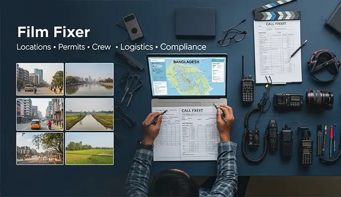
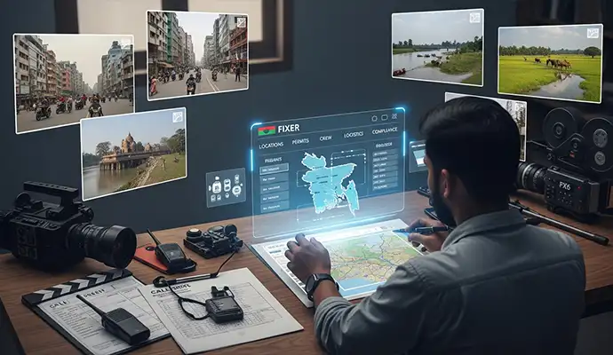
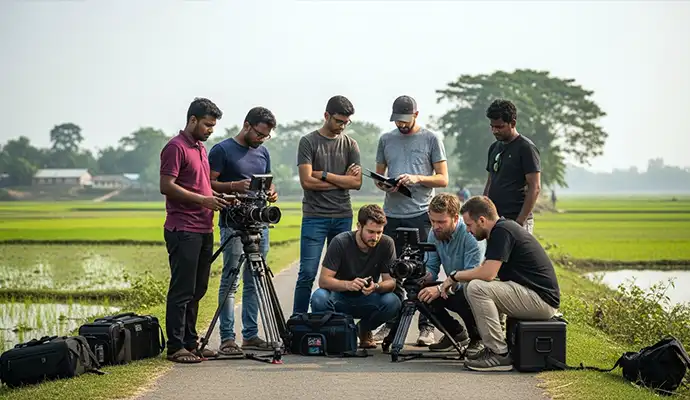
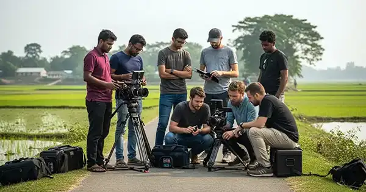

Fantastic team. They took ownership of the project. As a result, they gave very good creative inputs to improve the ad. They also tried hard to reduce the project cost... Read Ehtesham Ahmed's Full ReviewRead More
Film Fixer in Bangladesh for International Productions
Libanza Films has collaborated with legendary Hollywood film and music video director Dale "Rage" Resteghini of RagingNation Films, Los Angeles, USA, renowned for directing more than 700 music videos featuring internationally acclaimed artists including Guns N' Roses, Pitbull, Karina Pasian, Mayday Parade, Silverstein, DJ Felli Fel, Diddy, and many more as a Film Fixer in Bangladesh. We are also an ongoing production partner for Al Arabiya News (UAE), Joshua Chronicles (USA), and Crowd Productions (Belgium), while supporting international productions from the USA, UK, Belgium, Romania, Malaysia, Ecuador, Singapore, UAE, France, and India. Every production is personally overseen by Azizul Hoque Shiplu, Founder and Film Director of Libanza Films, who has worked in commercial film production since 2007 and holds a diploma from the Zahir Raihan Film Institute.
When an international production arrives in Bangladesh — whether it is a documentary crew from the UK, a broadcast journalist from the Middle East, an NGO communications team from Europe, or a commercial director from the United States — the single most important decision they make is who they hire as their local film fixer.
Libanza Films provides professional film fixer services in Bangladesh for international documentary filmmakers, journalists, broadcasters, NGOs, INGOs and foreign production teams of all sizes. We are an established Bangladesh production company with over a decade of experience in international production — which means we are not just a logistics coordinator. We understand storytelling, production timelines, broadcaster standards and the specific challenges of filming in Bangladesh.
Our fixer team handles everything a foreign crew cannot manage from overseas — filming permits, media and journalist visas, location access, authority coordination, local crew, equipment, transport, accommodation, and real-time problem-solving throughout the shoot. Your team focuses on the story. We handle Bangladesh.
Send us your production brief to receive a comprehensive production feasibility assessment, filming support plan, and an itemised cost estimate within 48 hours.
- Proven track record with international documentary, news, and commercial productions
- English-speaking production managers with global workflow experience
- End-to-end fixer support from pre-production planning through to wrap
- Nationwide coverage — Dhaka, Cox's Bazar, Sundarbans, Sylhet, Chittagong and beyond


Led on the Ground by Azizul Hoque Shiplu, Founder & Film Director
Every international production Libanza Films supports is overseen by Azizul Hoque Shiplu, Founder and Film Director, with over two decades in advertising and film production and direct personal oversight of more than 100 advertising and audiovisual projects in Bangladesh. He holds a diploma in filmmaking from the Zahir Raihan Film Institute and has built his production network through hands-on commercial, documentary and broadcast work — including multi-day, multi-crew corporate productions and campaigns for international FMCG and automotive clients filmed across Dhaka and beyond.
When you work with Libanza Films as your Bangladesh fixer, you are working directly with a director who has run productions of this scale himself — not only a logistics coordinator relaying instructions to a separate crew. Read Azizul's full profile →
International Production Support in Bangladesh
Film fixer services are the core of what Libanza Films provides — but for many international teams, the need is broader: complete international production support in Bangladesh, covering everything from the first planning call through to final delivery. This is the same service, described the way many production coordinators, commissioning editors and NGO communications teams search for it.
As your international production support partner in Bangladesh, Libanza Films manages:
- Pre-production planning — feasibility checks, budget estimates, location research and remote or on-ground scouting before your crew arrives
- Location scouting and access — identifying and securing the right locations across Dhaka and beyond, with all required permissions
- Permit acquisition — government filming permits, restricted-area clearances and location-specific permissions, managed end-to-end
- Crew hiring — cinematographers, sound recordists, production assistants and specialist local crew matched to your production's scale
- Equipment sourcing — camera, lighting and sound packages rented from trusted Dhaka-based partners
- Visa processing support — invitation letters and application guidance for journalist and filming visas
- Transportation and accommodation — vehicles, drivers and lodging arranged to fit your schedule and budget
Whether you call it a film fixer, a production support partner, or simply your on-the-ground team in Bangladesh, the service is the same: Libanza Films removes the parts of the production a remote team cannot manage from overseas, so your crew can focus on the story.
Who Our Film Fixer Services in Bangladesh Are For
Libanza Films provides film fixer and production support for every category of international production working in Bangladesh:
- Documentary filmmakers: Feature-length and short documentary productions covering development, climate, politics, culture, religion, human interest, and investigative subjects.
- Broadcast journalists and news crews: TV news, current affairs and investigative journalism for international broadcasters requiring fast, compliant local coordination.
- Streaming and digital platforms: Original content productions for streaming services requiring Bangladesh-based shooting with full production compliance.
- NGOs and INGOs: Development sector video content, beneficiary story production, donor communication films, and humanitarian documentation for international organisations operating in Bangladesh.
- Foreign advertising and commercial producers: International advertising agencies and branded content studios requiring a local production partner for TVC, OVC or brand film shoots.
- Independent filmmakers: Solo directors and small crews producing personal documentary, ethnographic, or travel-based content who need a trusted fixer and logistics partner.
- Corporate and educational content teams: International organisations producing training videos, CSR content, institutional films, or educational programming in Bangladesh.
- Photo and multimedia journalists: Photographers and multimedia reporters requiring the same permit, access, and logistics support as video crews.
What Does a Film Fixer Do in Bangladesh?

In Bangladesh, a film fixer is the bridge between an international production and every local system it depends on. They are not simply a translator or driver — a good fixer is a production coordinator, a cultural interpreter, and a permit navigator and a problem-solver simultaneously.
At Libanza Films, our fixer services cover:
- Government filming permits and official approvals — including ministry clearances, district-level permissions and restricted area access
- Media, journalist and production visa support — invitation letters, application guidance and liaison with relevant authorities
- Location scouting and access coordination — urban, rural, industrial, slum, hospital, government and sensitive environments
- Local crew and production staff — cinematographers, camera assistants, sound recordists, production assistants, drivers and translators
- Transport and logistics management — vehicles, drivers, inter-city travel and remote-area logistics for multi-location shoots
- Accommodation sourcing — appropriate to the crew's location, schedule and budget
- Authority and community liaison — police coordination, local government liaison and community access facilitation
- Security planning and risk assessment — safety briefings, contingency planning and real-time issue management
- On-set supervision — a Libanza Films representative is present throughout filming to resolve issues in real time
- Cultural and political guidance — context on sensitivities, appropriate conduct and community engagement
How Much Does a Film Fixer Cost in Bangladesh?

Film fixer costs in Bangladesh vary by engagement type, duration, crew size and permit complexity. As a guide, based on typical international productions Libanza Films has supported:
- Fixer-only support: approximately USD 2,000–8,000 — your crew, your direction; we handle permits, logistics and on-ground coordination
- Hybrid support: approximately USD 5,000–15,000 — you bring a director and key crew; we supply local DP, camera, sound and production staff
- Full local production partner: approximately USD 8,000–25,000+ — we execute the entire shoot on your brief, from filming through delivery
These ranges scale with shoot duration, number of locations (Cox's Bazar, Sundarbans and Sylhet add cost versus a single-city Dhaka shoot), permit complexity for restricted zones, and lead time — projects with under two weeks' notice require expedited permit processing, which adds cost.
Libanza Films provides transparent, itemised cost breakdowns for every production — covering fixer fees, crew day rates, permit costs, transport, accommodation and all logistics separately. No hidden costs. No vague package pricing.
To get an accurate quote, send us your production dates, locations, crew size, and a brief overview of what you are filming. We will respond with a full itemised estimate.
Request a Cost EstimateInternational Productions Libanza Films Has Supported in Bangladesh
Libanza Films has provided a film fixer and international production support for productions arriving from the United States, the United Kingdom, Belgium, Romania, Malaysia, Ecuador, Singapore, UAE, France, India, and beyond. The following are productions and organisations we have directly supported in Bangladesh.
USA
Ragingnation Films
Los Angeles, USA — Music video production support in Bangladesh
USA
Joshua Chronicles
USA — Street documentary production on Dhaka, full on-ground coordination
UK
Voyager Studio
United Kingdom — Corporate AV production support for a multinational RMG project, Mymensingh
USA — INGO
MiracleFeet
USA — INGO case study production at Bangladesh clinics, patient story documentation
SINGAPORE
Plus One
Singapore — Audio post house, voice-over production support from Bangladesh
MALAYSIA
Story Frontier
Kuala Lumpur, Malaysia — Documentary production support in Bangladesh
ECUADOR
María José
Ecuador — Independent audiovisual producer, documentary filmed at Cox's Bazar
USA
Hinrich Foundation
USA — Biography video production in Bangladesh
USA
Dev Global
USA — Event video production support in Bangladesh
INDIA — TVC
FCB India / Vinay Jaswal
Mumbai, India — Hero Bangladesh Eid TVC production support, talent
coordination and on-ground management for visiting international
Director Vinay Jaswal
ROMANIA
Parc Film
Bucharest, Romania — Casting support from Bangladesh
FRANCE — DEVELOPMENT
AFD
Agence Française de Développement (French Development Agency) —
Enlisted production vendor, Bangladesh
UAE — BROADCAST
Al Arabiya News
Dubai, UAE — International 24/7 news channel, ongoing film fixer
support for Bangladesh news collection
BELGIUM
Crowd Productions
Belgium — Fixer support for video production in Bangladesh
UAE
Elite Films
Dubai, UAE — Script language versioning, casting coordination
and voice-over production support
Productions supported from 12 countries across the USA, UK, Europe, Middle East, Asia, South America and beyond — spanning documentary, broadcast news, NGO, corporate TVC, music video, casting, voice-over, and event production.
Where We Fix Across Bangladesh
Bangladesh is geographically compact but operationally diverse. Each location presents different permit requirements, logistical realities and access challenges. Libanza Films has the networks and experience to fix across all of them.
Dhaka
Bangladesh's capital — urban street life, garment factories, political institutions, medical facilities, old city, Hazaribagh, Sadarghat river port. Complex permit environment requiring strong local authority relationships. Film Fixer in Dhaka →
Cox's Bazar
World's longest natural sea beach, Rohingya refugee settlements, coastal fishing communities. Sensitive access requirements for humanitarian productions. Libanza Films has established experience in INGO coordination here. Film Fixer in Cox's Bazar →
Sundarbans
World's largest mangrove delta, UNESCO World Heritage Site, tiger territory. Forest department permits required. Remote travel by boat through tidal channels. Wildlife, honey hunters, climate-affected coastal communities. Film Fixer in Sundarbans →
Chittagong
Ship-breaking yards (among the world's largest and most visually dramatic), Karnaphuli River port, Hill Tracts gateway, tribal communities. Port and industrial area permits require advance coordination. Film Fixer in Chittagong →
Sylhet
Tea garden estates, Ratargul swamp forest, rolling hill landscape, Sunamganj haor wetlands. Ideal for agriculture, rural community, environmental, and fair-trade documentary content. Film Fixer in Sylhet→
Rural and Remote Bangladesh
Char islands, northern drought-prone areas, coastal salinity zones, flood-affected communities and delta villages — essential for climate, development and social documentary content. Logistics-intensive; local knowledge is essential.
Filming in Bangladesh: What International Crews Need to Know
Bangladesh has a defined regulatory framework for international filming. Understanding it in advance saves productions from delays, access problems and compliance failures on arrival.
Permit & Visa Timelines at a Glance
General filming permit (Ministry of Information)
10–21 working days
BFDC permit (commercial / theatrical / high-budget documentary)
21–30 days
Journalist visa pre-clearance
2–4 weeks
Drone permit, yellow zone (urban / real estate)
3–4 weeks
Drone permit, green zone
Apply 30 days ahead recommended
Rohingya camp access (RRRC permit, Cox's Bazar)
2–3 weeks of prep
These are typical ranges based on productions Libanza Films has directly supported. Actual timelines depend on location sensitivity and current authority processing loads — we confirm a specific schedule once we have your production brief.
Filming Permits
Most international productions require clearance from the Ministry of Information, and often additional approvals from the district administration, police, and relevant sector ministries (health, education, military, port, etc.) depending on location. Government sites, hospitals, airports, and sensitive areas each carry their own approval process. Libanza Films manages the full permit chain for every project.
Media and Journalist Visas
Foreign journalists and media crews require a journalist visa or press accreditation for Bangladesh. This is separate from a tourist visa and requires a letter of invitation or accreditation from a registered local organisation. Libanza Films provides official invitation letters for international production teams and assists with the full application process.
Equipment Import
Professional camera equipment brought into Bangladesh by foreign crews must typically be declared at customs on arrival. Libanza Films coordinates customs documentation and carnet processing on your behalf to avoid confiscation or delays at the airport.
Filming Seasons
Bangladesh has two primary filming seasons. October to March is the dry season — lower humidity, clearer skies, and manageable temperatures. April to September is monsoon season — dramatic weather, green landscapes, and powerful visual conditions, but logistically more complex, particularly for outdoor and remote location shoots. Both seasons are workable with the right planning.
Safety and Security
Bangladesh is generally safe for international crews working with a professional local fixer. Libanza Films conducts pre-shoot safety assessments and briefs the team on local protocols and is present throughout filming to manage any situation that arises. Access to politically sensitive areas, protest zones, or restricted communities requires specific advance coordination.
Equipment Rental in Bangladesh
Professional camera, lighting, sound, and grip equipment are available for rental in Dhaka, removing the need for international crews to transport heavy kit. Libanza Films coordinates equipment rental from trusted local partners, with availability confirmed before the crew arrives.
Film Fixer or Production Company? Libanza Films Offers Both
Many international teams arrive in Bangladesh with their own creative and technical direction and need reliable local support. Others prefer to hand over a brief and have a local partner manage the entire Bangladesh production — crew, camera, direction, edit and delivery.
Libanza Films is both. International teams choose the level of engagement that fits their project:
- Fixer-only: Your crew, your direction — we handle permits, logistics, crew, equipment, and on-ground coordination
- Full local production partner: We execute the entire Bangladesh shoot on your brief — filming, directing, editing, and delivering to your specifications without you needing to travel
- Hybrid support: You bring a director and key technical crew — we supply the rest: local DP, camera assistants, sound, gaffer, production assistant, driver, and fixer
This flexibility means you are never paying for more than you need, and never working with multiple vendors when one partner can handle everything.
For NGOs and development organisations, see our specialist NGO Video Production in Bangladesh service.

Why International Productions Choose Libanza Films as Their Bangladesh Fixer
Several dedicated fixer companies operate in Bangladesh. What distinguishes Libanza Films is the combination of a long-established production track record, real relationships with authorities and communities, and a team that understands international production standards from the inside — not just from a logistics perspective.
- Over a decade of international production experience in Bangladesh — with real clients including Belgian commercial productions, Indian ad agencies, Middle East broadcast networks and international NGOs
- English-speaking, globally exposed team — our production managers communicate at the pace and standard that international teams expect
- Strong government and authority relationships — permits that take weeks through unfamiliar channels are expedited through established connections
- Transparent documentation and contracting — itemised budgets, clear agreements and professional invoicing aligned with international accounting requirements
- Nationwide location network — established contacts across Dhaka, Cox's Bazar, Sundarbans, Sylhet, Chittagong, and rural districts, not just the capital
- Full production capability behind the fixer role — when a production needs more than a fixer, Libanza Films can provide the full crew, equipment and production management without you finding a second vendor
- Repeat international clients — the most reliable measure of a fixer's quality is whether international teams return. Ours do.
- Specialist NGO and development sector experience — safeguarding-aware, consent-led production for humanitarian and development organisations
Also explore:
- Film Fixer in Dhaka
- Film Fixer in Cox's Bazar
- Film Fixer in Sundarbans
- Filming Permits & Media Visa Guidance in Bangladesh
- Documentary Production
- NGO Video Production in Bangladesh
- International Shoot in Bangladesh — 2026 Filming Guide
- How to Hire a Film Fixer in Bangladesh: The Complete Guide (2026)
- Drone Filming Permits in Bangladesh: Complete Guide (2026)
- Filming in Bangladesh from the UK and USA: Guide for Diaspora Filmmakers (2026)
Film Fixer Bangladesh — Frequently Asked Questions
Yes. Foreign productions need a local fixer to manage permits, visas, authority access and on-ground logistics. Filming without one routinely causes permit delays and access refusals.
Fixer-only support typically runs USD 2,000–8,000, hybrid support USD 5,000–15,000, and full production partnership USD 8,000–25,000+, depending on duration, crew size and locations.
General Ministry of Information permits take 10–21 working days. BFDC permits for commercial or high-budget documentary work take 21–30 days. Apply as early as possible.
Journalist visa pre-clearance through the Ministry of Information takes 2–4 weeks before embassy application. This is separate from, and required instead of, a tourist visa.
Yes. Libanza Films manages government approvals, location permissions, restricted-area clearances and police coordination, and provides invitation letters for journalist visa applications.
Yes. This includes Cox's Bazar, the Sundarbans, Sylhet, Chittagong and rural districts. Filming in the Rohingya camps requires separate RRRC permits and 2–3 weeks of prep, which Libanza Films coordinates directly.
Yes, with prior approval. Green-zone drone permits should be applied for 30 days ahead; yellow-zone urban locations typically take 3–4 weeks. Libanza Films manages the application.
Yes. Fixer support scales from a single filmmaker needing local coordination to a full broadcast crew needing complete production management.
A fixer handles access, permits and logistics for a foreign crew. A production company executes the creative and technical work. Libanza Films offers both, separately or combined.
Talk to a Film Fixer in Bangladesh
Tell us your production dates, locations, crew size, and what you are filming. Libanza Films will respond with a full production support plan and itemised cost estimate. We work with international production timelines and standards — so your planning runs as smoothly from Bangladesh as from any market you have worked in before.
Customer Reviews

Very dedicated team! Apprecite their enthusiasm, creativity and passion for their work... Read Md. Jamil Hossain Chowdhury Rahat's Full ReviewRead More

Libanza specializes in creating captivating films and advertisements with compelling narratives and stunning visuals... Read Riad Full ReviewRead More
Get in Touch
Our Clients
Diverse industries, trusted partnerships. From advertising agencies to corporate entities and non-profit organizations, our clients rely on us to bring their creative visions to life. With passion, expertise, and attention to detail, we deliver exceptional video production solutions that exceed expectations. Join our esteemed clientele and experience the power of captivating storytelling with Libanza Films.